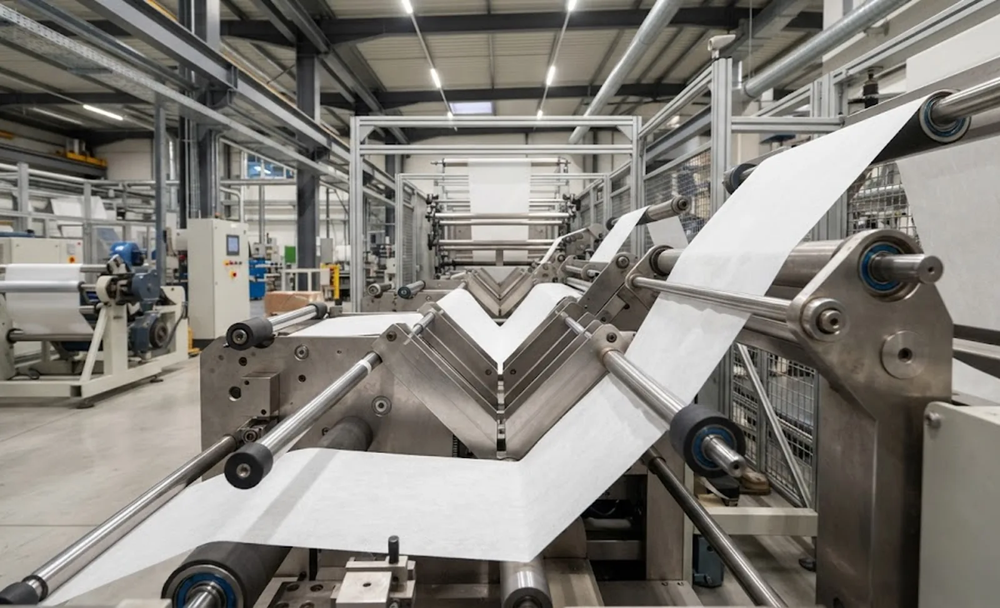
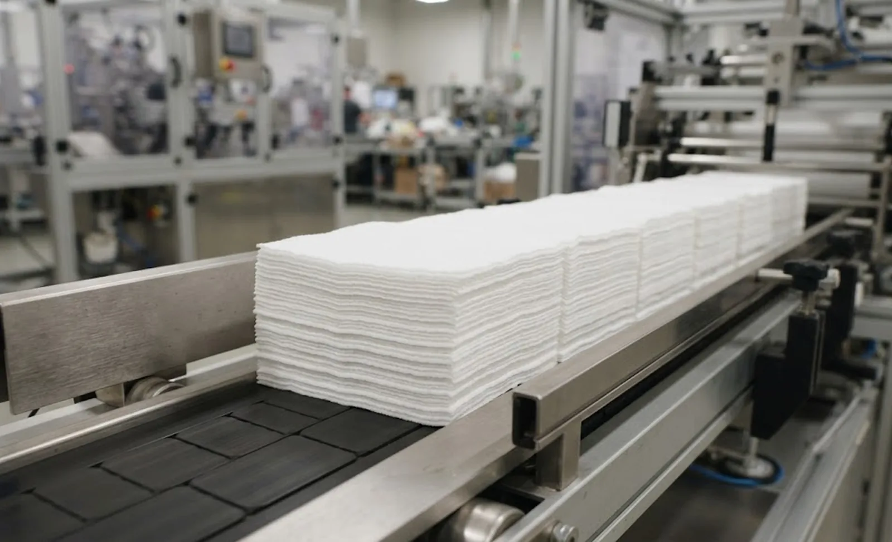

Published October 7, 2026 | By HDPTH Technical Editorial Team

Between the slitter rewinder and the retail pack sits a step buyers underspecify: folding. Wipes, medical drapes and filter panels all depend on a fold that repeats millions of times — panel widths equal, edges aligned, count correct. When the fold drifts, the symptom appears downstream as packs that will not close or stacks that jam the cartoner. The folder deserves the same discipline as the slitter that feeds it — and most of that discipline is geometry and registration, not speed.
Fold styles and where each one fits
The main fold families map onto product types:
- Half-fold — the web folds once onto itself. Simple, fast, and the base for stacked products such as drapes and towels.
- Z-fold / gate fold — panels offset in alternating directions so product pulls from a box without dragging its neighbours. The standard for flat wipes and interfolded formats.
- C-fold — panels nest inside one another, common in towels and industrial wipers where presentation matters less than count.
- Accordion fold — repeated parallel folds for pop-up dispensing and filter pleats, where pitch accuracy affects dispensing performance.
Most industrial folders use fixed heads with adjustable plates; some offer interchangeable plates. Each additional style adds tooling, changeover time and a tolerance stack — so decide which styles your range genuinely needs, not a list you will never run.
Dedicated folder or integrated converting line?
Standalone folders fed from a slitter rewinder suit mixed products and frequent changeovers; integrated lines — slitting, perforating and folding in one pass — suit high-volume single-format products where one control system owns registration. Integration shortens the route, but locks the line to its least flexible station. The material-flow thinking in converting line layout planning applies directly: sketch the route from parent roll to packed product, and let volume and variety decide the architecture.
The specification variables that decide the quote
| Variable | What to specify | Common mistake |
|---|---|---|
| Fold styles | Only the styles the range needs, with panel width range for each | Ordering four styles to run two |
| Ply and GSM | Full basis weight range, single and multi-ply combinations | Specifying the flagship product only, then finding heavy plies jam the plates |
| Web width | Maximum parent web width and number of lanes across | Matching width to today’s product, not the wider web you bought the slitter for |
| Speed | Folds per minute at your real GSM and ply count | Comparing catalogue speeds measured on different materials |
| Accuracy | Cut-to-fold and panel registration tolerance on your web | Accepting a tolerance quoted on a stiff demo material |
Nonwovens complicate these numbers: the web is compressible, extensible and often fuzzy at the edge. That is why accuracy matters more than speed — a folder 10 percent slower but holding registration outproduces a faster machine feeding a jamming cartoner.
Registration: where folds meet perforations and cuts
Longitudinal folds repeat reliably because static geometry sets them — plate angles and web path. Cross-folds and cut-to-fold products are the hard case: the web stretches between feed nip and fold point, and stretch is not constant across GSM ranges. The line needs a controlled feed loop, speed-matched nips and, on perforated products, a sensor that corrects to a reference mark. When folding is combined with perforation — the classic wipes configuration — perforation design and fold geometry must be engineered together, as covered in perforating and rewinding machine selection and perforation design and tear strength. Ask any supplier to demonstrate registration on your GSM and ply combination over a production run, not a demo.

Static, dust and the realities of folding nonwovens
Two web behaviours dominate day-to-day folder performance. Static electricity makes lightweight nonwovens cling to plates, misfold and double-feed; anti-static bars and grounded paths around the folding head are cheap insurance. Dust and lint from slitting and folding accumulate on plates and sensors, shifting geometry over a shift; ask for accessible plate adjustment, vacuum points and a cleaning routine operators actually keep. The static control measures already in place upstream — see static control for slitter rewinders — should continue into the folder, not reset to zero.
Downstream: the interface that pays for the machine
The folded product has one job: to enter packaging cleanly. Specify the outfeed format as rigorously as the fold — stack dimensions, count, orientation, presentation, transfer method — and check speed compatibility so neither machine starves the other. If the folder includes counting, stacking or inspection, put those in the acceptance criteria. Define the handover, measure it during commissioning, and both machines will hit their numbers.
Planning slitting, perforating and folding as one line?
Send HDPTH your product formats, GSM range and target output. We configure slitting, perforating and folding as one registered process — and prove the outfeed stack your packaging line needs.
Submit Your Project InquiryFrequently asked questions
What fold styles can a nonwoven folding machine produce?
The common families are the half-fold, the Z-fold or gate fold that offsets panels in alternating directions, the C-fold that nests panels inside one another, and the accordion fold used for pop-up wipes and interleafed dispensing. Most industrial folders use fixed heads with adjustable panel widths, some with interchangeable plates. Decide the styles your range genuinely needs — each additional style adds plates, changeover time and cost.
How accurate is fold registration on roll-fed nonwoven lines?
Longitudinal folds repeat reliably because static geometry sets them, while cross-fold and cut-to-fold accuracy depends on how well the drive compensates for web stretch between feed nip and fold point. For extensible nonwovens, expect cross-fold registration within a few millimetres, tightening when tension is stable and the feed loop is controlled. Ask for measured results on your GSM, not a catalogue number.
Can folding be integrated with perforating and slitting on one line?
Yes — this is the typical configuration for wipes, medical drapes and filter media. Slitting sets the product width, perforating defines how it tears or dispenses, and folding shapes it in one pass. Integration shortens the route and keeps registration under one control system, but the line is only as flexible as its least flexible station. If you run many short-run products, weigh integrated lines against standalone folders fed from a slitter rewinder.
What GSM and web widths can nonwoven folding machines handle?
Industrial folders commonly handle nonwovens from roughly 30 to 120 GSM in single or multiple plies, with web widths up to 2 metres or more. The practical limits come from fold plate geometry, web stiffness and speed: heavy or stiff webs resist tight folds and need larger radii. Always specify the full GSM range you intend to run, including multi-ply combinations.
How do I match a folding machine to my packaging line?
Start from the outfeed, not the infeed. Define the folded format your packer accepts — dimensions, count, orientation, presentation — and specify the folder’s count, stacking and discharge to deliver exactly that. Check speed compatibility so neither machine starves the other, and agree how product is transferred, counted and inspected between the two. A folder whose stacks the packer cannot accept wastes its precision.